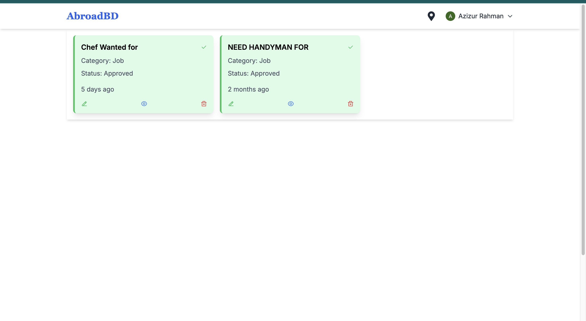
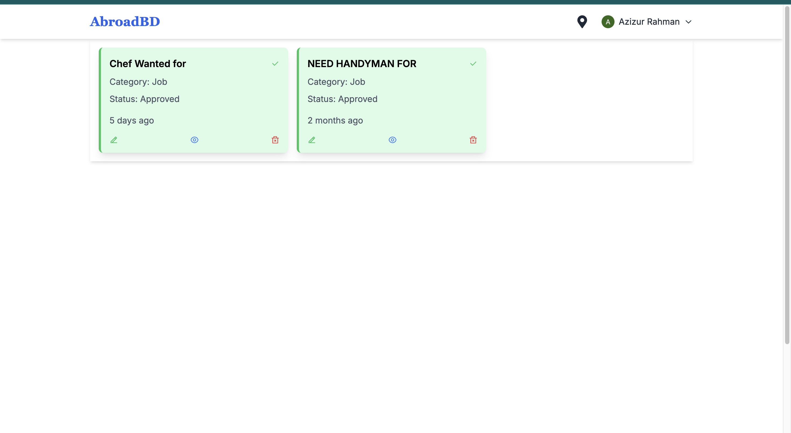

AbroadBD Community App

 

Project Overview
AbroadBD is a community application designed to connect the Bangladeshi diaspora in Canada and the USA, offering resources for job opportunities, legal services, events, and social networking.
Key Features:
- User profiles with customizable information.
- Job postings from various employers targeting the Bangladeshi community.
- Event calendar showcasing community events and activities.
- Forums for discussions and sharing experiences among members.
- Legal resources and attorney services tailored for the diaspora.
This app fosters community engagement and support, providing valuable resources for individuals navigating life abroad.